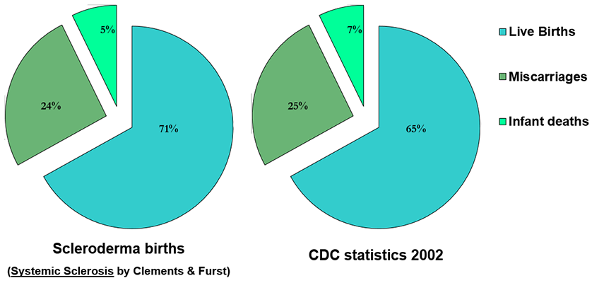

Module: Sexuality and Scleroderma
Elaine A Furst, BSN, MA
71% of pregnancies in women with scleroderma result in live babies. 65% of women in the general US population have live births.
The pregnancy statistics for the general population (CDC 2002) are not significantly different from those for the scleroderma population.
Many women with scleroderma experience normal pregnancies and state that their disease got “better” during those months. Statistically, 61% of the women had stable disease during the pregnancy. Once the baby was delivered, however, the disease worsened in 20% of the women.
Women with scleroderma typically do well during and after pregnancy if:
- They have limited disease.
- Medications such as cytoxan and methotrexate (and others) are stopped before conception.
- OB doctors or obstetricians and a rheumatologist work together in the care of the woman.
- The pregnant woman takes good care of herself.
- The mother has lots of support and help once the baby is born as the scleroderma may flare up after delivery.
- No breast feeding is allowed if medications are resumed after the baby is delivered.
It is important to keep the following factors in mind when planning to become pregnant:
- Women with systemic scleroderma have more difficulty getting pregnant and coming to term.
- In the 3rd trimester, woman with scleroderma need to be monitored almost weekly due to the possibility of hypertension, renal failure, etc.
- The GI tract is under stress in every pregnancy, so GERD and constipation/diarrhea may increase.
- If there’s any evidence of pulmonary, cardiac, or kidney problems, termination of the pregnancy may have to be considered.